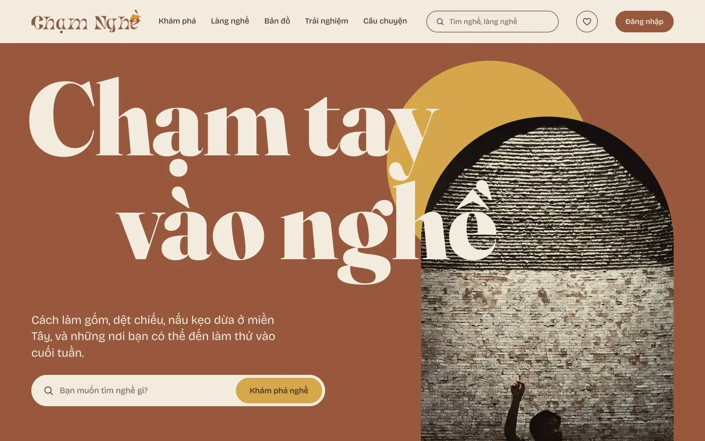
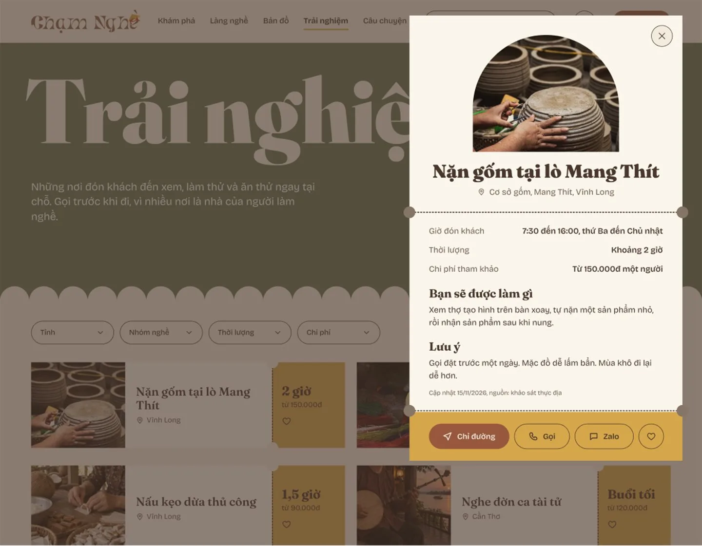
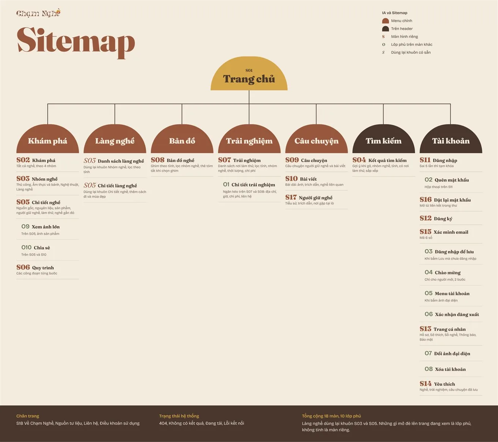
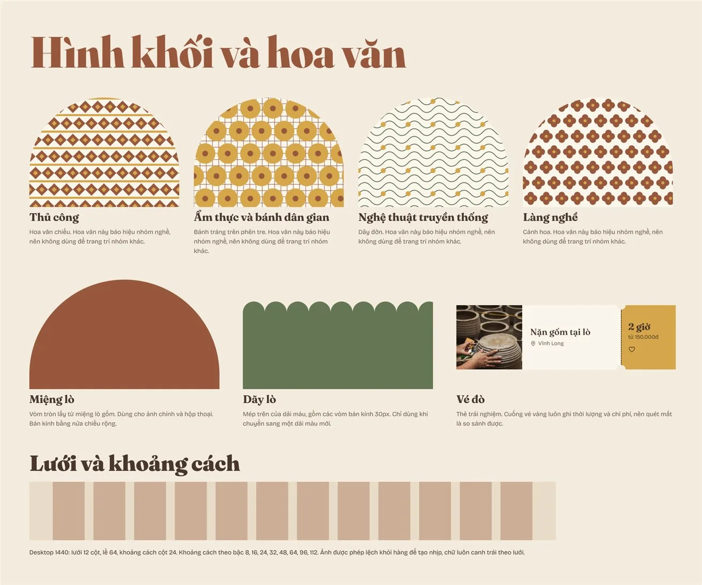
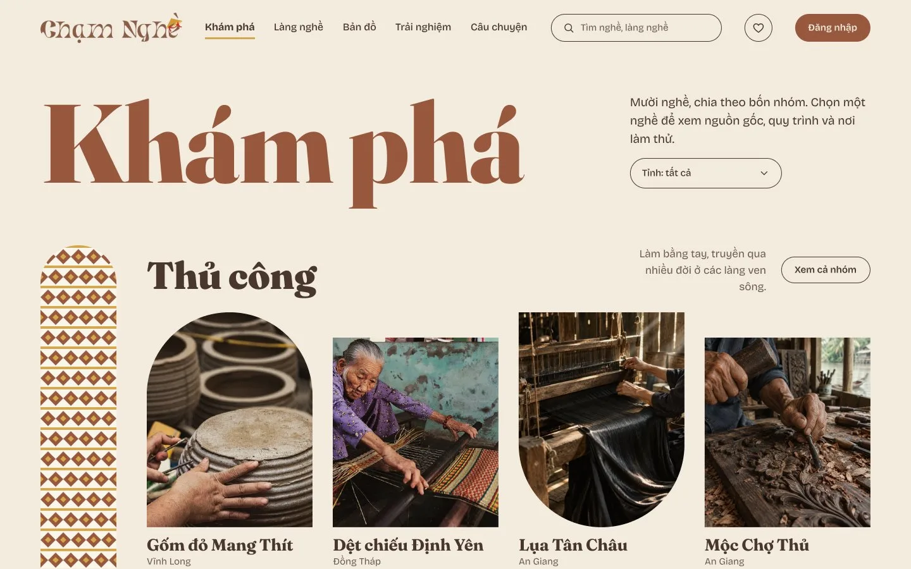
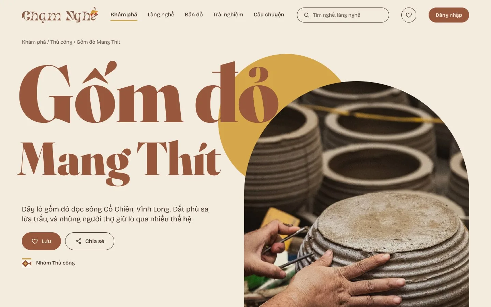
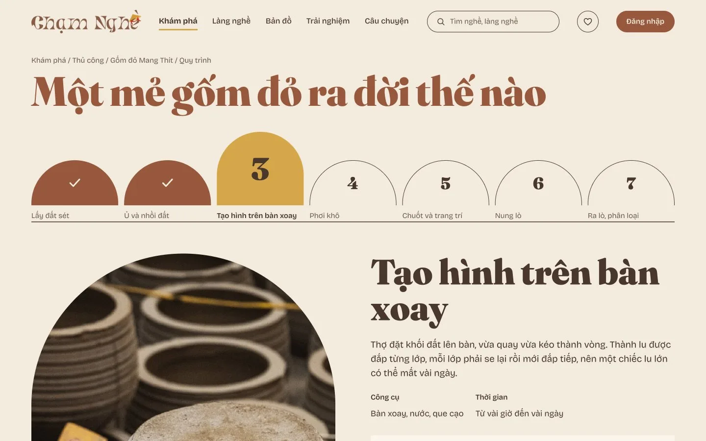
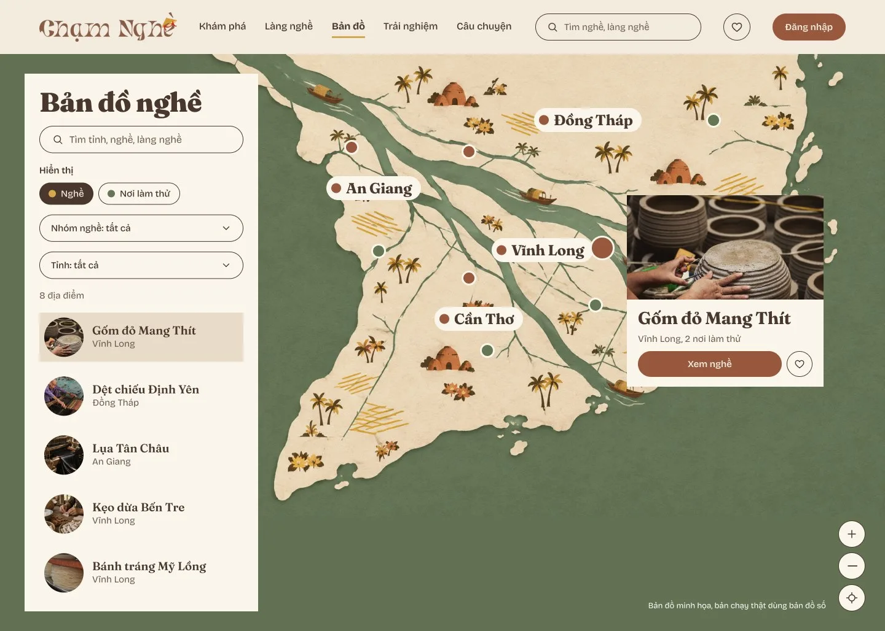
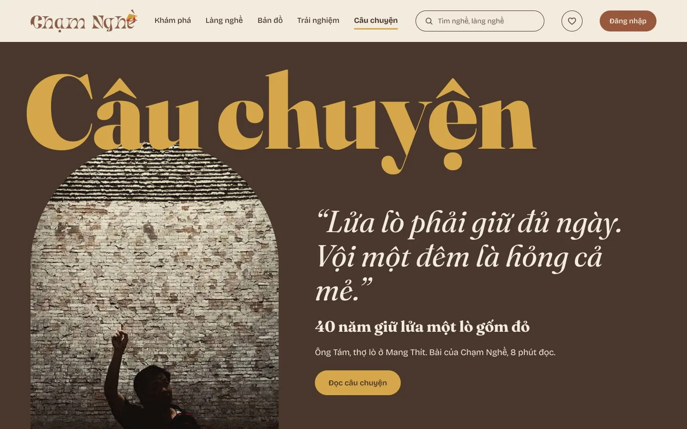
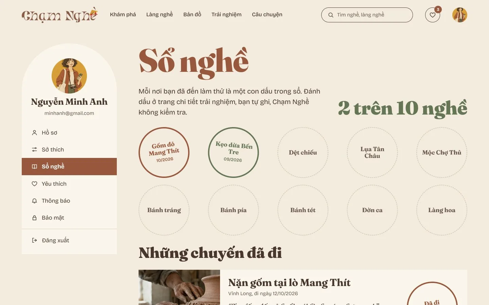

Chạm Nghề
A website for finding, understanding and trying the traditional crafts of the Mekong Delta.Website để tìm, hiểu và thử làm các nghề truyền thống miền Tây.

- RoleVai trò
- Research, UX, UI and coded prototypeNghiên cứu, UX, UI và prototype bằng code
- YearNăm
- 2026, concept project2026, dự án concept
- PlatformNền tảng
- Website, coded prototypeWebsite, prototype dựng bằng code
- DomainLĩnh vực
- Culture and experience travelVăn hóa và du lịch trải nghiệm
- Key featuresTính năng chính
- 10 crafts in 4 groups10 nghề trong 4 nhóm
- Each craft step by stepQuy trình nghề theo từng công đoạn
- Experiences on a map, with filtersTrải nghiệm trên bản đồ, có bộ lọc
- Source and date on every factNguồn và ngày cập nhật cho mọi thông tin
- A craft passportSổ nghề
The problemBài toán
Young people want to understand the crafts of the South, but information is scattered, dry, and rarely says how to get there.Người trẻ muốn hiểu nghề truyền thống phương Nam, nhưng thông tin rời rạc, khô khan và hiếm khi chỉ đường tới nơi.
- Minh Anh, 21, wants to goMinh Anh, 21, muốn điPlans one or two days. Blocked by old reviews and not knowing which places still welcome visitors. A proto-persona.Đi một hai ngày. Vướng vì đánh giá cũ và không biết nơi nào còn đón khách. Chân dung giả định.
- Quốc Huy, 27, wants to understandQuốc Huy, 27, muốn hiểuGrew up near a kiln and never learned how the jars are made. Blocked by short, repeated articles. A proto-persona.Lớn lên cạnh lò gốm mà chưa từng biết cách làm cái lu. Vướng vì bài viết ngắn và lặp. Chân dung giả định.
Design decisions: experience drawerQuyết định thiết kế: ngăn thông tin trải nghiệm

1The three answers come firstBa câu trả lời đứng đầu
When, how long, how much. A trip is planned on these, so they sit above the story.Khi nào, bao lâu, bao nhiêu tiền. Chuyến đi dựa vào đó, nên chúng nằm trên phần kể chuyện.
2Every fact carries its dateThông tin nào cũng có ngày
Old, conflicting information is the main pain. Freshness is shown next to the fact, with its source.Thông tin cũ và mâu thuẫn là điểm đau lớn nhất. Ngày cập nhật và nguồn đặt ngay cạnh.
3It ends in a planKết thúc bằng một kế hoạch
Directions, call, Zalo or save. Four ways out, and every one of them moves the visitor closer to going.Chỉ đường, gọi, Zalo hoặc lưu. Bốn lối ra, lối nào cũng đưa người xem gần chuyến đi hơn.
4The list stays behindDanh sách vẫn ở phía sau
A drawer, not a new page. Compare three places without losing your filters.Là ngăn kéo, không phải trang mới. So sánh ba nơi mà không mất bộ lọc.
User flowsLuồng người dùng
Find a place to tryTìm chỗ để thử
Minh Anh’s path, from a wish to an address.Đường của Minh Anh, từ ý muốn tới địa chỉ.
Learn the processHiểu cách làm
Quốc Huy’s path through one craft.Đường của Quốc Huy qua một nghề.
Structure and flows before visual designCấu trúc và luồng trước khi lên giao diện




Key screensCác màn hình chính







Designed statesCác trạng thái đã thiết kế
- No resultsKhông có kết quả
- Process finishedĐã xem hết quy trình
- Wrong passwordSai mật khẩu
- Link sentĐã gửi liên kết
- Empty favouritesMục yêu thích trống
- Saved toast, 5 secondsThông báo đã lưu, 5 giây
DeliveredKết quả bàn giao
- A path from problem to prototype: research, structure, 7 flows, wireframes, UIĐi từ bài toán tới prototype: nghiên cứu, cấu trúc, 7 luồng, wireframe, UI
- A visual language with its own contrast rulesNgôn ngữ hình ảnh có quy tắc tương phản riêng
- A coded prototype for user testingPrototype bằng code để thử với người dùng
Next stepsBước tiếp theo
- Run the survey and interviews, then revise the personasLàm khảo sát, phỏng vấn rồi sửa chân dung
- Replace sample content. Hours, prices, quotes and some photos are samplesThay nội dung mẫu. Giờ, giá, trích dẫn và một số ảnh đang là mẫu
- Test with 5 to 10 peopleThử với 5 đến 10 người